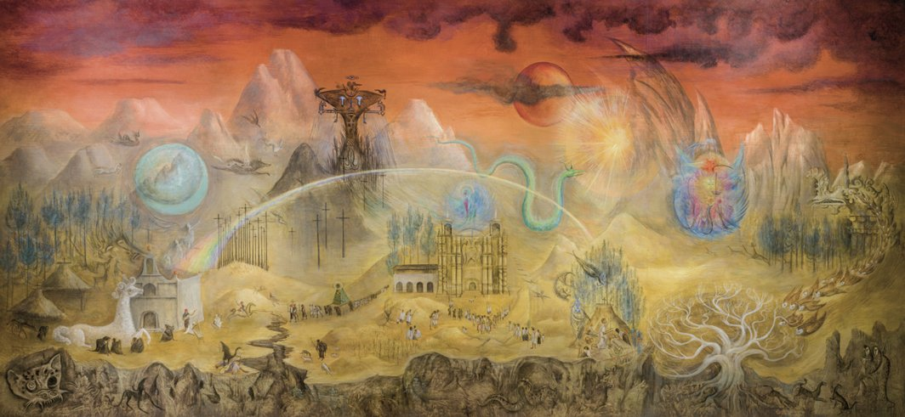
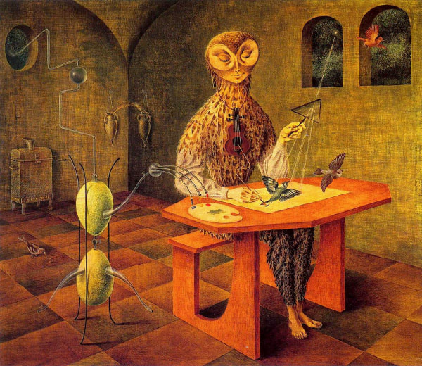
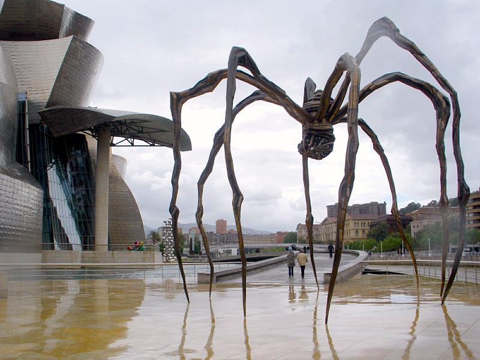
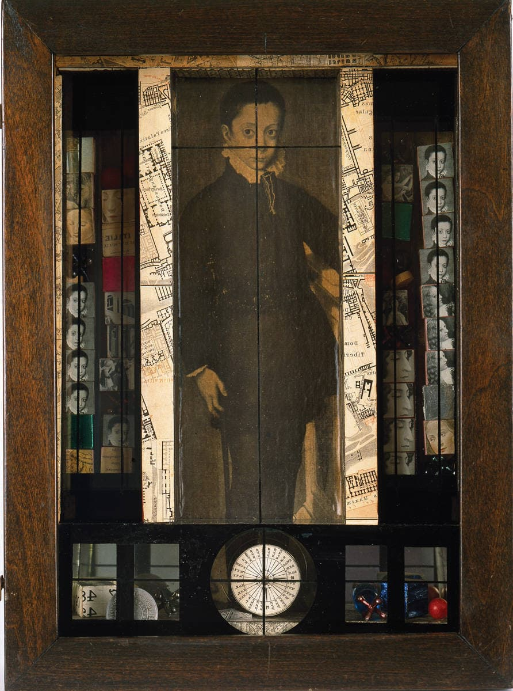
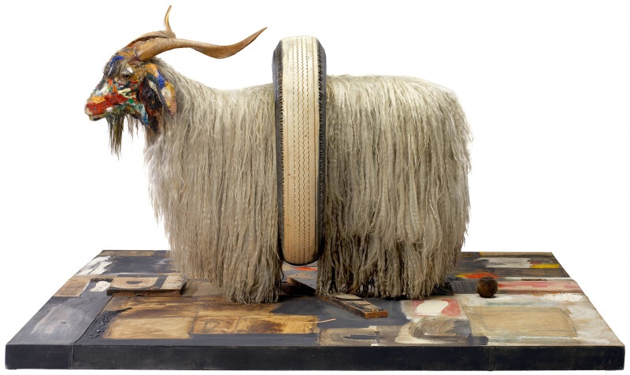
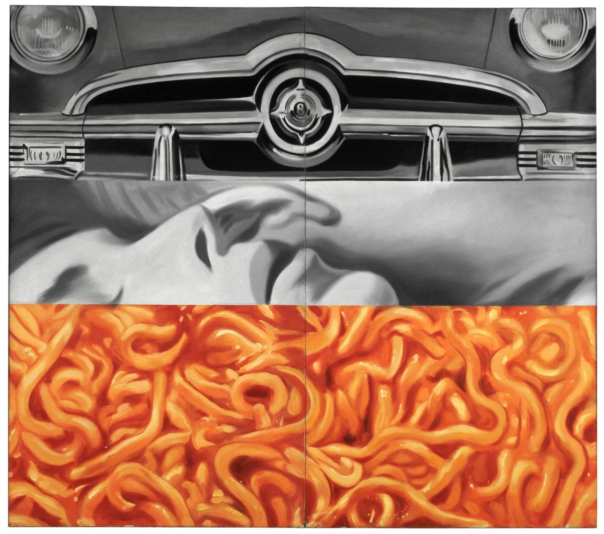
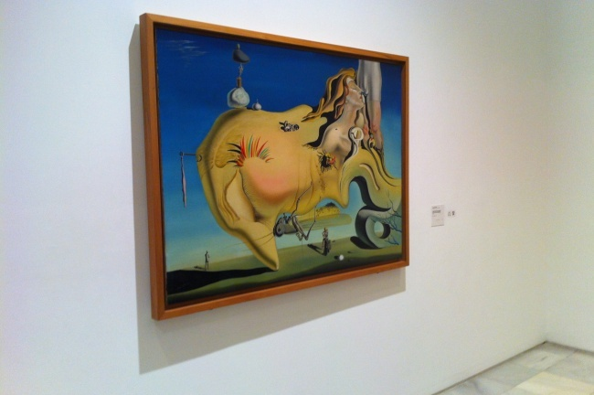
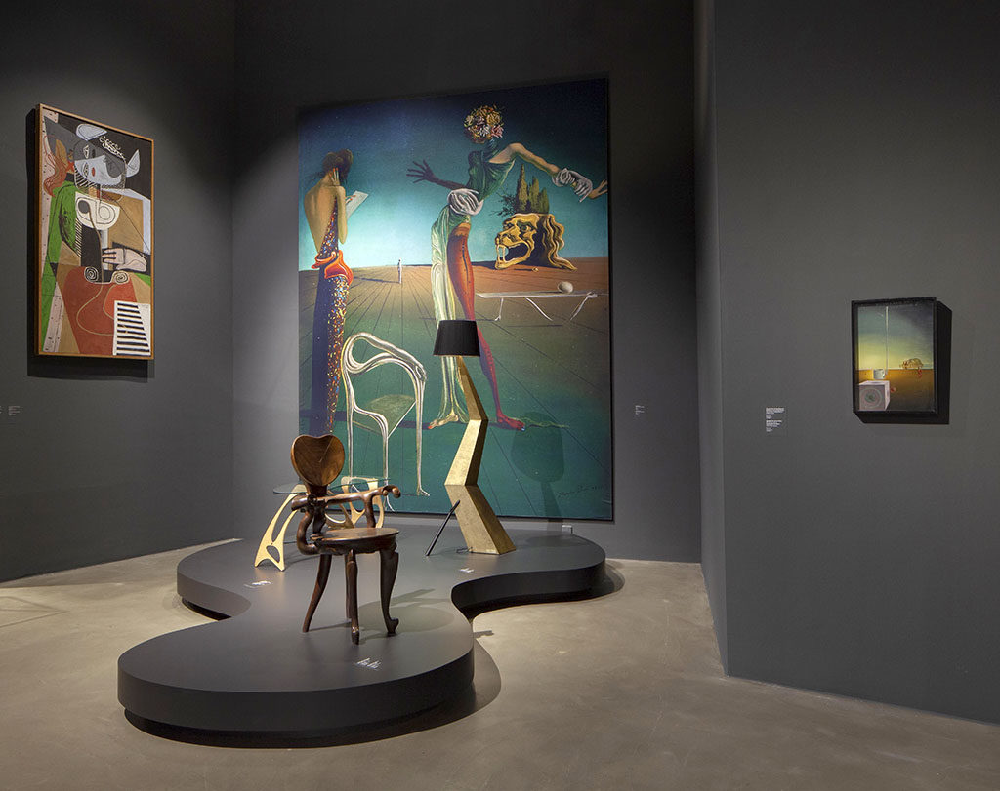
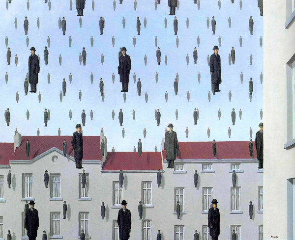

El eco del surrealismo






Cuando los sueños llegan al museo

Exposiciones Permanentes
El surrealismo se ha ganado un lugar de honor en los museos más importantes del mundo, como el MoMA, el Centro Pompidou y el Reina Sofía. Sus salas dedicadas no solo exhiben obras, sino que contextualizan el poder revolucionario del movimiento en la historia del arte.
Retrospectivas Exitosas
Las exposiciones retrospectivas de artistas como Salvador Dalí, René Magritte y Joan Miró baten récords de asistencia. Estos eventos reafirman la popularidad inagotable del surrealismo y su capacidad para dialogar con nuevas generaciones de espectadores.

Actualidad

Desde la publicidad y la moda hasta el cine y el arte digital, la estética surrealista sigue siendo una fuente inagotable de inspiración, resonando con fuerza en la cultura contemporánea.
Explorar Actualidad